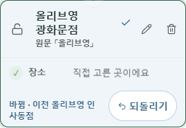
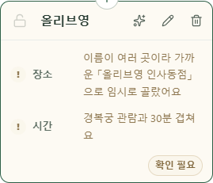
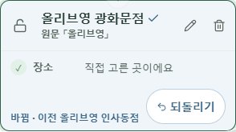
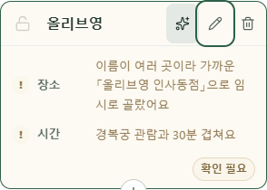

바뀐 일정에는 추천 대신 되돌리기
자동 추천으로 바꾼 카드는 추천 아이콘을 숨기고, 카드 아래에 되돌리기를 표시합니다. 이 버튼은 해당 일정만 원래 값으로 돌립니다. 다른 일정의 변경은 유지합니다.
실제 Chrome · mock 서버 화면입니다. 공개 서비스에 배포하기 전 로컬 검증 결과입니다.
휴대폰 375px




전체 화면 보기


PC 1280px




전체 화면 보기


새로고침 이전의 변경 기록은 이 화면에 보관되지 않습니다. 복원할 값을 확인한 일정에만 되돌리기를 표시합니다. 복원 요청이 실패하면 현재 변경과 버튼을 유지해 다시 시도할 수 있습니다.